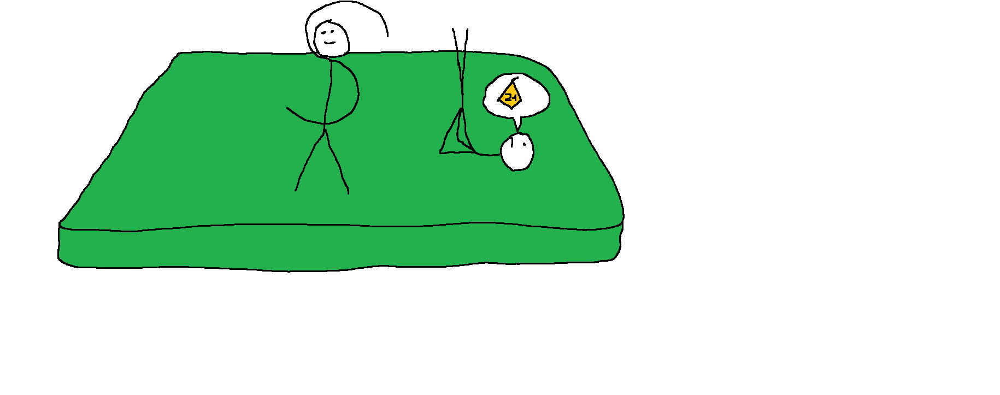

Rossz jegyek születtek a mai tesiórán
A mai tesiórán elég rossz jegyeket szerzett a három szögfüggvény, Szinusz, Koszinusz és Tangens. Szinusz és Tangens elég rosszul tejlesítettek, és csak egy hármast értek el, ami Szinusznak megfelelt, de Tangensnek nem. A tesióra legrosszabbja viszont Koszinusz volt, aki egy kétirányú Zsúldóforgóval kezdte a feleletét. A következő gyakorlat egy aszimmetrikus előrebukfenc volt, ezt egy gyertya követte. Majd egy aszimmetrikus hátrabukfenc és egy rezsőállás után Koszinusz befejezte feleletét, ami mint később kiderült, nem érte el a szakmai minimumot. Koszinusz később azt nyilatkozta, azért nem érte el a szakmai minimumot, mert a tanár nem látta a felelete elejét, amelyben a kétirányú zsúldóforgót végezte.